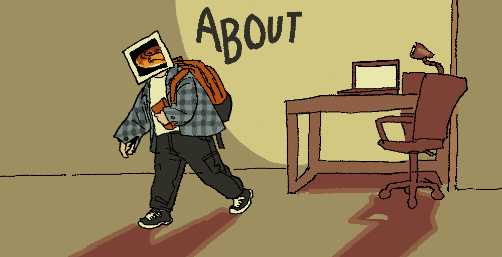

Amy is a Philadelphia-based illustrator, concept artist, and occasional 3D modeller. She is currently studying User Experience and Interaction Design at Drexel University.
She is currently working with Tearstruck Studios on the game Not Yet Dawn as a character artist and Mandible Studios on the game SPEKTRE as a concept artist and illustrator.
She has also worked as a freelance artist/illustrator for over 5 years.